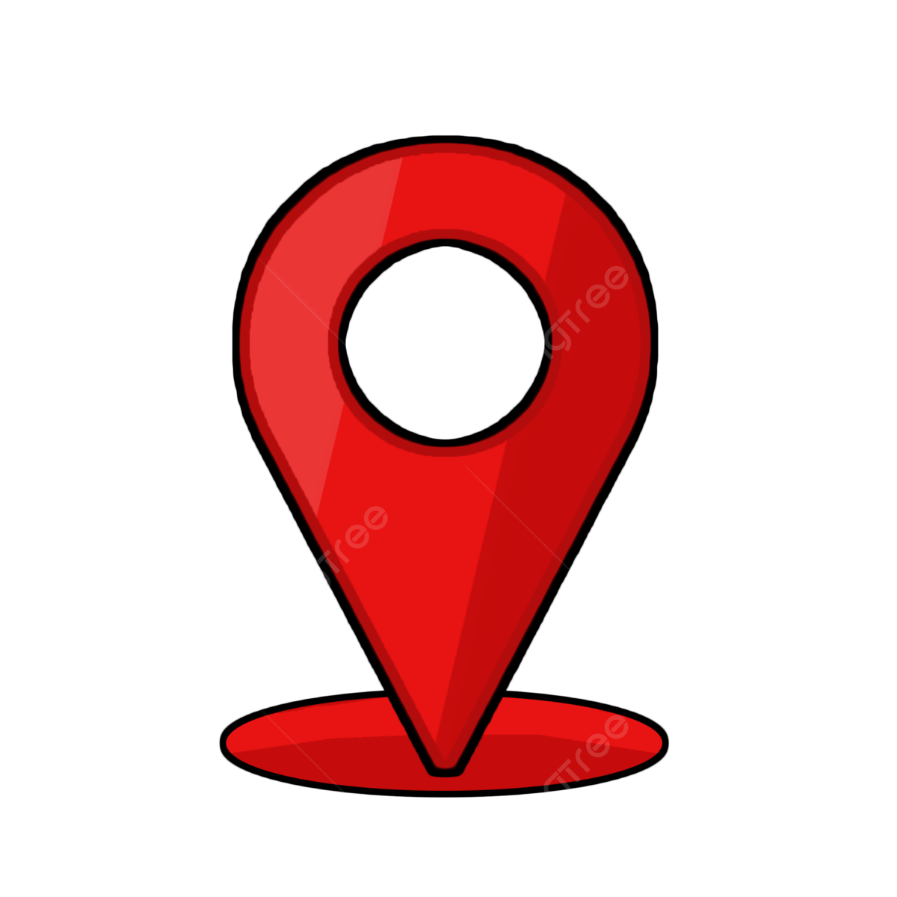

“ชายหาดบางแสน” ที่เที่ยวทะเลชลบุรีห่างจากสะพานปลาไปไม่ไกลนัก ติดทะเล ถือเป็นซิกเนเจอร์ของจังหวัดชลบุรี ใครที่มาเที่ยว ต้องไม่พลาดแลนด์มาร์กสำคัญนี้เป็นอันขาด เพราะนอกจากน้ำใส ทะเลสวยแล้ว ที่นี่เขายังมี 8 ร้านอาหารริมทะเลบางแสน บรรยากาศสุดชิล วิวสุดเลิศ เหมาะสำหรับนั่งสังสรรค์ส่งท้ายทริปอันยาวไกลนี้จริงๆ
5 ที่เที่ยวชลบุรี แนะนำต้องมา

